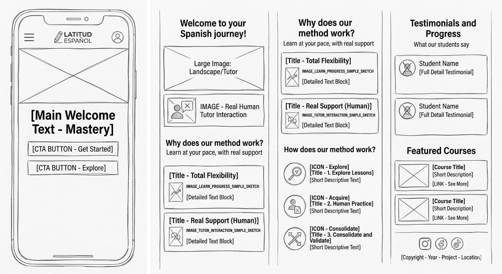
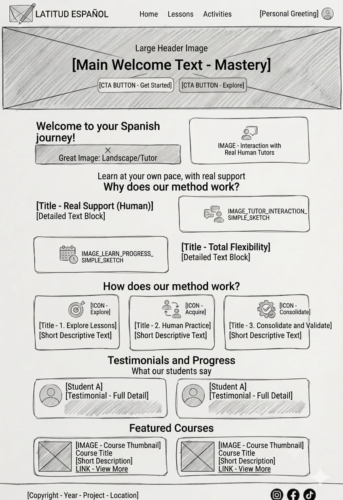

Site Name
Latitud Español
I chose this name because "Latitud" (Latitude) evokes a geographic coordinate and a global meeting point. It represents how the Spanish language connects students from different parts of the world under the same dynamic, cultural, and professional learning space.
Site Purpose
The purpose of Latitud Español is to provide an interactive, educational web environment for adults who want to learn or practice the fundamentals of the Spanish language. The site focuses on offering clear theoretical resources, highlighting the irreplaceable value of feedback and support from a qualified human tutor over automated AI solutions, and providing dynamic practice tools with immediate validation.
Target Audience Scenarios
Scenario 1
Visitor Question: What is the real difference between using the verbs "ser" and "estar," and how can I learn to contrast them easily?
Site Answer: The Lessons page will feature organized tables and dynamic content focused on resolving this and other fundamental grammar and vocabulary questions.
Scenario 2
Visitor Question: How can I immediately evaluate if I understood the module's basic vocabulary before scheduling a personal tutoring session?
Site Answer: The Practice page will include an interactive form powered by JavaScript that will evaluate student answers in real time, offering immediate feedback without reloading the browser.
Color Schema
Selected colors reflect professionalism, cultural energy, and academic growth. They will be applied consistently across the final website.
(Dark Blue) Headings, navigation backgrounds, footer, main branding
(Green) Success feedback, interactive active states, secondary accents
(Fuchsia) Highlights, icons, links, calls-to-action, hover effects
(Light Gray) Background for content sections, lesson cards, wireframe grids
Typography
To ensure optimal readability and visual hierarchy on both mobile devices and desktop screens, two font families have been selected:
- Heading Font (H1, H2, H3): Verdana, Geneva, sans-serif. A robust, clean font with an excellent presentation for main titles.
- Body Font (Paragraphs, lists): Roboto, Arial, sans-serif. Specifically designed for screens, ensuring that extensive grammatical explanations are easy to read.
Wireframes (Home Page Layout)
Below are the visual layout plans projected for the home page in both mobile and desktop views:
Mobile View (Small screens)

Desktop View (Large screens)
